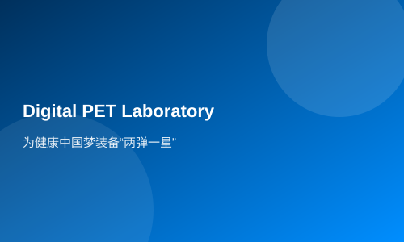

为健康中国梦装备“两弹一星”
创新启示录
提到癌症，人们总是充满恐惧。这一人类“杀手”，因其较高的死亡率，令人谈之色变。全国肿瘤登记中心在《2012中国肿瘤登记年报》中称，中国每年新发癌症病例约350万，因癌症死亡约250万，癌症成了阻碍我国健康梦实现的头号公敌。医学界对癌症的治疗已达成了“早发现、早治疗、早痊愈”的共识，尽可能早的发现癌细胞对于癌症治愈的重要性不言而喻。
近十年来，采用正电子发射断层成像（PET）高级医疗仪器，在癌症早期对癌细胞进行探测成像代表了人类检测、诊断与指导癌症治疗的最高水平。由于技术壁垒，目前，全球仅有美国通用电气、德国西门子、荷兰飞利浦三家跨国公司可以独立研发和生产PET，我国使用的PET全部为进口。PET作为典型的大型医疗设备，代表了一个国家医疗装备产业发展的最高水平，堪比医疗装备产业界的“两弹一星”。然而，PET仪器的数字化，一直是一个世界级难题，也是各国科学界和产业界攻坚的对象。武汉光电国家实验室（筹）生物医学光子学研究部研究员、华中科技大学生命学院教授谢庆国带领的13个学科的医理融合、医工交叉团队在国家自然科学基金委、科技部和教育部的支持下，经过十余年的产学研协同创新与广泛的国际合作，成功攻克了PET数字化这一世界级难题。
“科研选择了我”
选择投身研制数字PET之前，谢庆国并不知道，自己的未来何去何从。
2001年，29岁的谢庆国刚从华中理工大学毕业，获得了该校的控制工程与控制理论博士学位。然而从那之后，谢庆国经历了一个漫长的迷惘期。面对众多的选择，他并不知道自己该如何规划未来。他经常花一整个下午打篮球，直到自己精疲力尽。同学叫他“华工自控第一闲人”，他也只是一笑了之。
在那个物质条件匮乏的年代，许多的大学生在毕业后都会选择“金饭碗”、“铁饭碗”作为就业出路。然而谢庆国并不想像其他同学一样，选择从事“轻松体面”但仅仅是为了填饱肚子的工作。在华中理工大学浓郁的学术科研氛围的熏陶下，谢庆国坚信不疑，真正属于自己的出路，应当像伟大的科学家史蒂芬·霍金说的那样，是做着自己梦想的事业，并能为之获得认可和肯定的。
“于是，从事科学研究，这样一个把理论和生活应用相结合，融合人类智慧精华的工作，便选择了我”，谢庆国带着使命感说道。
谢庆国认为，科研并不是谈论与高高在上的理论，他时刻提醒自己所学的绝不是空洞的公式，而是改变人类生活的武器。这一点，从谢庆国选择科研之路，到最后成功研制全球首台数字PET，他就深信不疑。
一串数字开始的科研
从选择投身科研，到决心研制数字PET，谢庆国的决定只源于一串数字。
“中国成为了癌症发病率头号大国，每天因癌症而死亡的人超过4000人，每7到8人中就有一人死于癌症。预测到2030年，中国的癌症新发人数和死亡人数将超过486万人和360万人。”
这样触目惊心的数字，敲醒了当时正在科研路上追梦的谢庆国。
人类自始至终都在与癌症进行着殊死搏斗，然而什么时候才能有一个“先发制癌”的武器，将癌细胞扼杀于摇篮之中？博士毕业后，谢庆国先后辗转，赴台湾卫生研究院、芝加哥大学、美国阿贡国家实验室等机构研究学习，在医学工程、放射学和高能物理等研究领域学到了不少知识。那时的他，认识到了PET(正电子发射断层成像仪)就是他一直寻找的那样“武器”，是临床早期诊断和指导癌症治疗的最佳手段之一，只是由于超高速闪烁脉冲信号难以数字化的技术瓶颈，PET只有模拟和模拟数字混合型机器，限制了其功用。
为何不将PET也数字化？谢庆国大胆地提出了这样的想法。在当时，数字化浪潮席卷全球，数字技术也正在渗入到医学影像领域中。然而，PET数字化始终是一个世界级难题，一直是各国科学家攻坚的对象，在PET高端医疗装备数字化领域，中国的身影还是一片空白。
这样一个在外人看起来似乎是“不可能”的白日梦，谢庆国却狠下决心一定要完成。在这之外，他还做了一个更艰难的决定——回国从头干。他告诉自己：全球首台数字PET，一定要诞生在中国。
从头开始，合作中出创新
2004年，回到母校华中科技大学的谢庆国，创立了PET仪器开发与多模医学成像实验室，从无到有逐渐凝聚了一支多学科的医理融合、医工交叉团队。在研究的最开始，单打独斗的谢庆国，就遇到了不少困难。理工科出生的他，不知道该如何迈出第一步进入于高端医疗装备行业。
经过多重努力，谢庆国找到了华中科技大学同济医学院附属协和医院核医学科的张永学。一开始，在与张永学的合作中，两个团队之间基本的交流都是一件极其困难的事情。谢与张两人完全来自不同的学科背景，研究领域不同导致了他们的话语体系也不同。
为了打破隔阂，他们俩当时总是“裹”在一起。谢庆国说，“就像两团面，只有主动地施加予力量揉和，最终才能融合。”为了科研，他们不断地相互借鉴，常常以研讨会的方式探讨各种问题。每一次会议都是一次学习的过程。
为了让实验更好地进行，谢庆国把自己最精干优秀的学生全部送到了华中科技大学同济医学院去做实验，让他们脚踏实地地接医学的“地气”。从武昌到汉口，来回坐公交车需要4个小时，学生们一开始叫苦不迭。谢庆国则安慰他们，对学生说：“你们每天做的都是自己喜爱的事情，为梦想而奋斗，多幸福啊！苦一点算什么呢？”
梦想还很遥远
历经十余年的磨砺，攻克各个技术难题，谢庆国护航健康中国梦的武器——数字PET于2012年研制而成，这个医疗装备界的“两弹一星”，如愿地诞生在了中国。
在今年四月举行的数字PET成果鉴定会上，中国工程院院士俞梦孙等组成的专家组给予了数字PET最高评价。鉴定认为，该项技术达到国际领先水平。中国科学家在PET数字化领域的技术突破，意味着更早更灵敏地发现肿瘤、诊断癌症将不再是梦。在鉴定会现场，谢庆国对专家组们说，“这样的仪器，承载的不仅是我们发明团队的梦想，更多的是科研人对社会责任的承担，对人类健康的关怀。”
然而，获得了肯定之后的谢庆国，却觉得梦想还很遥远。
“我们与苏州瑞派宁科技有限公司产学研合作研制出小型数字PET 机器并成功应用。目前，我们正在计划做出全身人体临床PET样机并开展临床试验。下一步，我希望我国自主产权的数字PET能真正地造福人类、服务社会。”
谢庆国告诉记者，目前，全球已投入的商用PET约5000台，美国近3000台，而中国临床使用的尚不足200台，全部为进口。然而现在谢庆国团队已经拥有数字PET完整的自主知识产权，若能将中国自主创新的临床数字PET产业化，不仅能造福广大患者，还能打破西方公司垄断，实现我国高端医疗设备产业零突破，为保卫健康中国梦做出应有的贡献。